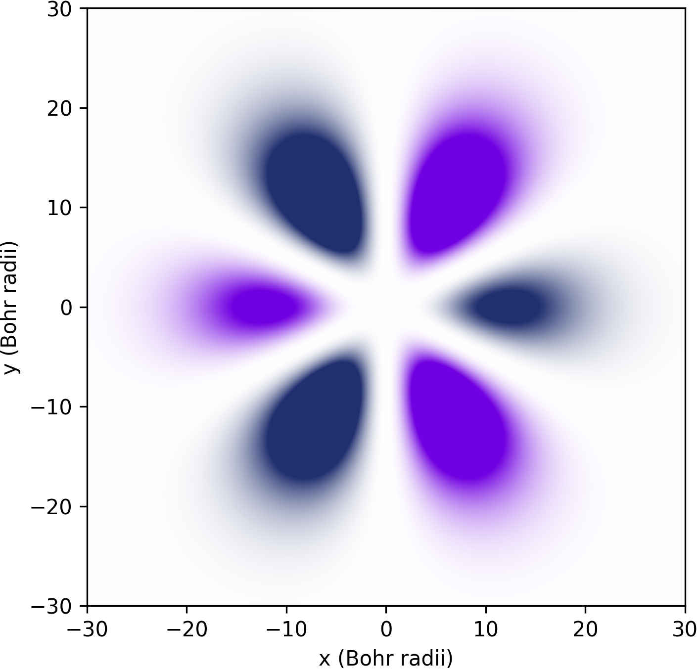

Simulating the dynamics of the $H_2$ molecule#
Quantum computing offers a promising avenue for simulating complex molecular systems, potentially revolutionizing fields like drug discovery, materials science, and chemical engineering. At the heart of this capability lies Hamiltonian simulation, a powerful technique that allows us to model the quantum behavior of molecules with exponentially less resources compared to classical computers. In this tutorial, we’ll explore how to simulate molecules using Hamiltonian simulation techniques implemented in Qrisp. Qrisp provides a user-friendly interface for simulating quantum many body systems, making it a suitable tool for tackling complex quantum chemistry problems. We’ll cover the following key aspects:
By the end of this tutorial, you’ll have a solid understanding of how to leverage Qrisp’s capabilities to perform molecular simulations on quantum computers. Let’s dive in and discover how Qrisp can help us unlock the quantum secrets of molecules!
The fundamentals of Hamiltonian simulation and the second quantization#
To understand what “second quantization” means it might be helpful to start with the first quantization. The idea behind this is that physical systems containing only a single particale are described by a Hilbert space \(\mathcal{H}\), which consits of a set of basis vectors:
An arbitrary state \(\ket{\phi}\) can therefore be represented by a linear combination of these basis vectors:
What these particular \(\ket{\psi_i}\) represent depends on the system. For instance for the Hydrogen atom these basis vectors represent the atomic orbitals. If you participated in a course for atomic physics before, you might have seen pictures like this:

This plot represents the real part of the amplitude of one of the basis vectors (the one with \(n = 4, k = 3, l = 1\) to be precise).
The second quantization now describes how systems including multiple particles are treated. For this the so called ladder operators are introduced, that is, for each basis state \(\ket{\psi_i}\) there is an operator \(a_i^\dagger\), which creates a particle in state \(\ket{\psi_i}\). A creative notation for this might be:
For this reason, this operator is called the “creator”. Similarly there is also the “annihilator” \(a_i\), which destroys the particle.
The ladder operators therefore determine the intrinsic interaction behavior of the particles. Observations from experiments show that there are two types of particles whose ladder operators follow different sets of laws.
For Bosons the ladder operators obey commutator laws:
For Fermions the ladder operators obey anti-commutator laws:
Note that the fermionic laws imply \(a_i^\dagger a_i^\dagger = 0\). This means that an operator, which tries to insert two particles in the same state will immidiately become 0 and therefore not contribute. This is known as Pauli exclusion principle.
Within Qrisp it is currently only possible to model fermions, which is for many applications in chemistry the more important case. A modelling framework for bosons will follow in a future release. To start building a fermionic operator, we import the functions c and a for creators and annihilators.
[1]:
from qrisp.operators import c, a
O = a(0) * c(1) + a(1) * a(2)
print(O)
a0*c1 + a1*a2
To learn more how to build and manipulate these expressions, please look at the documentation page of FermionicOperator. For instance, the hermitian conjugate can be computed using the .dagger method.
[2]:
print(O.dagger())
a1*c0 + c2*c1
To apply the Pauli exclusion principle but also other anti-commutation laws for simplifaction, you can call the .reduce method.
[3]:
O = a(0) * a(0) + a(1) * a(2) - a(2) * a(1)
print(O.reduce())
2*a1*a2
The Jordan-Wigner embedding#
A natural question that comes up is how to represent the ladder operators and the corresponding states on a quantum computer. The most established way to do this is to use the Jordan-Wigner embedding (even though there are several interesting alternatives). The Jordan-Wigner embedding identifies each ladder term with an operator that acts on a qubit space:
Where \(A_k = \ket{0}\bra{1}\) and \(Z_i\) are the Pauli-Z Operators. Feel free to verify that this indeed satisfies the anti-commutator relations! We can apply the Jordan-Wigner embedding with the corresponding method:
[4]:
O_fermionic = a(4)
O_qubit = O_fermionic.to_qubit_operator(mapping_type="jordan_wigner")
print(O_qubit)
Z(0)*Z(1)*Z(2)*Z(3)*A(4)
This gives us an instance of the QubitOperator class. What is the difference to a FermionicOperator? While FermionicOperators model the more abstract fermion space, qubit operators represent operators on the qubit space \((\mathbb{C}^2)^{\otimes n}\) and can be simulated and evaluated efficiently using a quantum computer. In particular, QubitOperators can represent tensor products of the following operators \(X,Y,Z,A,C,P^0,P^1,I\). Make sure to read the documentation to learn about their definition!
Dynamics#
Both boson and fermion systems evolve under the Schrödinger equation:
Where \(H\) is a hermitian operator called Hamiltonian. Hamiltonian simulation is the procedure of mimicing the dynamics of a physical system described by a Hamiltonian \(H\) using a quantum computer. In other words: creating the state \(\ket{\phi, t} = \text{exp}(iHt)\ket{\phi, 0}\) artificially to evaluate some of its properties.
For bosonic systems, the Hamiltonian can only be a linear combination of products of the bosonic ladder operators. The equivalent holds for fermionic systems.
Where all \(h \in \mathbb{R}\). An example Hamiltonian could therefore look like this
The particular values of the coefficients (like \(h_{01}\) and \(h_{00}\)) are determined by the specifics of the system. For many systems of interest these numbers involve the computation of some integrals - a task that can be efficiently performed on the classical computer.
Loading molecular data into Qrisp#
If you don’t feel like solving integrals right now, we’ve got you covered! Qrisp has a convenient interface to PySCF, which loads the molecular data directly as FermionicOperator. For that you need PySCF installed (pip install pyscf). If you’re on Windows you might need to do some WSL gymnastics.
[5]:
from pyscf import gto
from qrisp.operators import FermionicOperator
mol = gto.M(atom="""H 0 0 0; H 0 0 0.74""", basis="sto-3g")
H_ferm = FermionicOperator.from_pyscf(mol)
print(H_ferm)
-0.181210462015197*a0*a1*c2*c3 + 0.181210462015197*a0*c1*c2*a3 - 1.25330978664598*c0*a0 + 0.674755926814448*c0*a0*c1*a1 + 0.482500939335617*c0*a0*c2*a2 + 0.663711401350814*c0*a0*c3*a3 + 0.181210462015197*c0*a1*a2*c3 - 0.181210462015197*c0*c1*a2*a3 - 1.25330978664598*c1*a1 + 0.663711401350814*c1*a1*c2*a2 + 0.482500939335617*c1*a1*c3*a3 - 0.475068848772179*c2*a2 + 0.697651504490461*c2*a2*c3*a3 - 0.475068848772179*c3*a3
This snippet uses the .from_pyscf method to load the FermionicOperator representing the orbitals of the Dihydrogen molecule \(H_2\). Or to be more precise, two hydrogen nuclei seperated by \(0.74\) Angstrom.
Or if preferred, the Jordan-Wigner embedding:
[6]:
H_qubit = H_ferm.to_qubit_operator()
print(H_qubit)
0.181210462015197*A(0)*A(1)*C(2)*C(3) - 0.181210462015197*A(0)*C(1)*C(2)*A(3) - 0.181210462015197*C(0)*A(1)*A(2)*C(3) + 0.181210462015197*C(0)*C(1)*A(2)*A(3) - 1.25330978664598*P1(0) + 0.674755926814448*P1(0)*P1(1) + 0.482500939335617*P1(0)*P1(2) + 0.663711401350814*P1(0)*P1(3) - 1.25330978664598*P1(1) + 0.663711401350814*P1(1)*P1(2) + 0.482500939335617*P1(1)*P1(3) - 0.475068848772179*P1(2) + 0.697651504490461*P1(2)*P1(3) - 0.475068848772179*P1(3)
Performing Hamiltonian simulation#
To perform Hamiltonian simulation, we use the .trotterization method, which gives us a Python function that performs a simulation of the Hamiltonian on a QuantumVariable.
[7]:
from qrisp import QuantumVariable
U = H_ferm.trotterization()
def state_prep():
electron_state = QuantumVariable(4)
electron_state[:] = {"1100": 2**-0.5, "0001": 2**-0.5}
U(electron_state, t=100, steps=20)
return electron_state
This snippet defines a function state_prep that first initializes the state \(\ket{\phi, t = 0}\), which is a superposition of 2 electrons in the lower two orbitals and a state of 1 electron in the highest orbital. Second, we perform the Hamiltonian simulation.
[8]:
electron_state = state_prep()
This snippets simulates the Dihydrogen molecule for \(t = 100\) atomic units of time, i.e.
Finally, we want to extract some physical quantity from our simulation. Our quantity of choice is the particle number operator:
In Python code:
[9]:
N = sum(c(i) * a(i) for i in range(4))
For each state \(i\), this operator leaves the “electron at \(i\)” state invariant (i.e. a +1 contribution) and maps the “no electron at \(i\)” state to a 0 contribution. Its eigenvalues therefore indicate the number of electrons in the system. To evaluate the expectation value \(\bra{\phi}N \ket{\phi}\), we call the .expectation_value method.
[10]:
expectation_value = N.expectation_value(state_prep, precision=0.01)()
print(expectation_value)
1.4984592498140474
We see that the expectaction value is (almost) 1.5 because \((2+1)/2 = 1.5\), which is expected assuming that the dynamics under the given Hamiltonian doesn’t create particles out of nowhere (or destroys them). The value is not exact because of statistical noise - we can increase the precision (which will however require more measurements from the backend!):
[11]:
print(N.expectation_value(state_prep, precision=0.0001)())
1.4999932478124958
This concludes our little tutorial on Hamiltonian simulation. We hope you could learn something and feel motivated to explore more systems and techniques! Make sure to also check out the molecular potential energy curves example to learn how to compute the ground state for both types of operators!
For your reference, we give the full code below:
[12]:
# Loading molecular data
from qrisp.operators import a, c, FermionicOperator
from pyscf import gto
mol = gto.M(atom="""H 0 0 0; H 0 0 0.74""", basis="sto-3g")
H_ferm = FermionicOperator.from_pyscf(mol)
# Initializing the quantum state and performing Hamiltonian simulation
from qrisp import QuantumVariable
U = H_ferm.trotterization()
def state_prep():
electron_state = QuantumVariable(4)
electron_state[:] = {"1100": 2**-0.5, "0001": 2**-0.5}
U(electron_state, t=100, steps=20)
return electron_state
# Evaluating the number operator
N = sum(c(i) * a(i) for i in range(4))
expectation_value = N.expectation_value(state_prep, precision=0.01)()
print(expectation_value)
1.4971841462118798